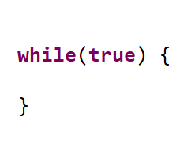

Els meus pitjors enemics


| Nom | Cognom | Edat | Genere | Raó per la qual és el meu enemic | Imatge de l'enemic |
|---|---|---|---|---|---|
| Linus | Torvalds | 54 anys | Masculí | Perquè és el creador del sistema operatiu més horrible i estrambòtic que existeix en la història de la informàtica, Linux. | |
| Brendan | Eich | 63 anys | Masculí | Perquè és el creador del llenguatge JavaScript, a més que el va crear en només 10 dies. | |
| while | (true) | Des dels inicis de la programació | Estructura de control | Bucle while infinit, capaç de fer suspendre qualsevol examen de programació de qualsevol alumne. |  |